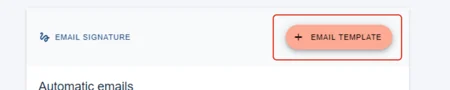
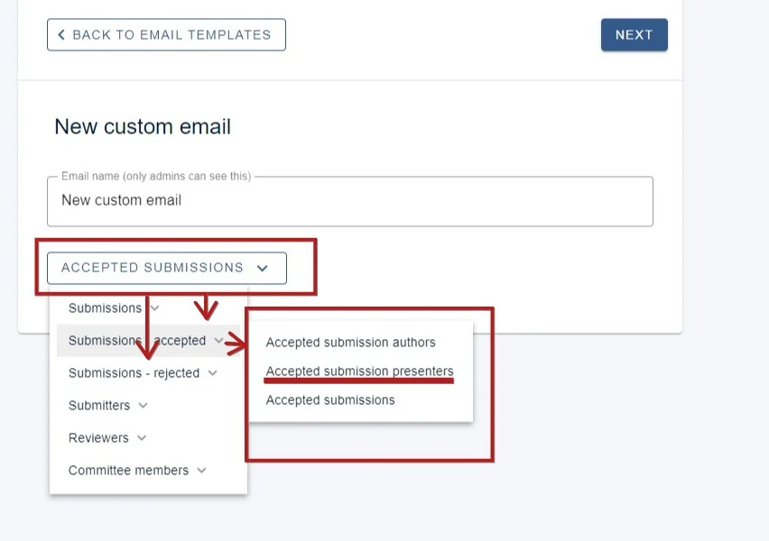

Emailing presenters and authors directly
It is possible to create new templates to send out messages to presenters and authors. This article will show you how.#
The guidance below is for event administrators/ organisers. If you are an end user (eg. submitter, reviewer, delegate etc), please click here.
NB It's important to be able to distinguish between submitters, authors and presenters.
Submitters: There can only be one submitter for every submission. These are the people completing the submission form.
Authors: Authors are listed by submitters in the authors and affiliations question. The author is often the submitter, but often multiple authors are allowed.
Presenter: Presenters can also be the same as both the submitter and the author, but often only one presenter is allowed where there are multiple authors. These are tagged in the authors and affiliations question, and will be denoted in bold or underlined in the program and abstract books.
Go to Event dashboard → Emails → Edit and send → Abstract Management
You will then see a list of template emails for the event. Click on +EMAIL TEMPLATE to create a new custom email.

In the New Custom Email screen, enter a name for the email and click the RECIPIENT GROUP dropdown.
You will see sub categories under Submissions - accepted and Submissions - rejected
If emailing those presenters whose submissions are accepted, click on the one shown below.
You can then create your custom email.

Did this page solve it?
Thanks — this helps us fix it.
Didn't solve it? Ask our support team
No question is too small, and there's no charge for asking. Raise a ticket and someone who knows the software will pick it up.